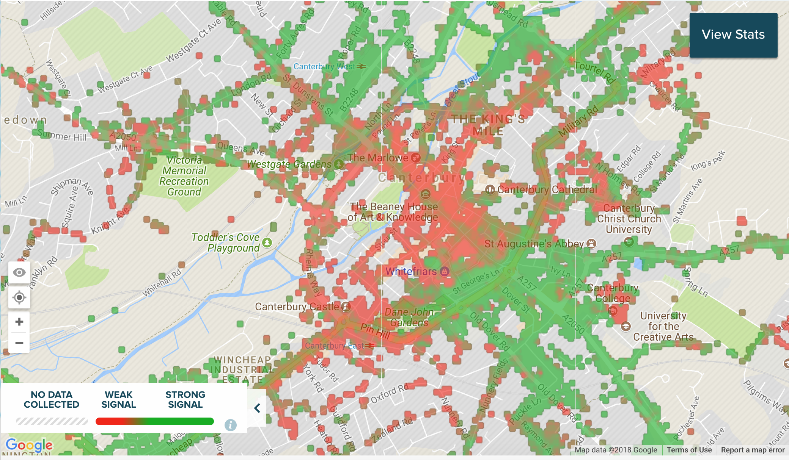
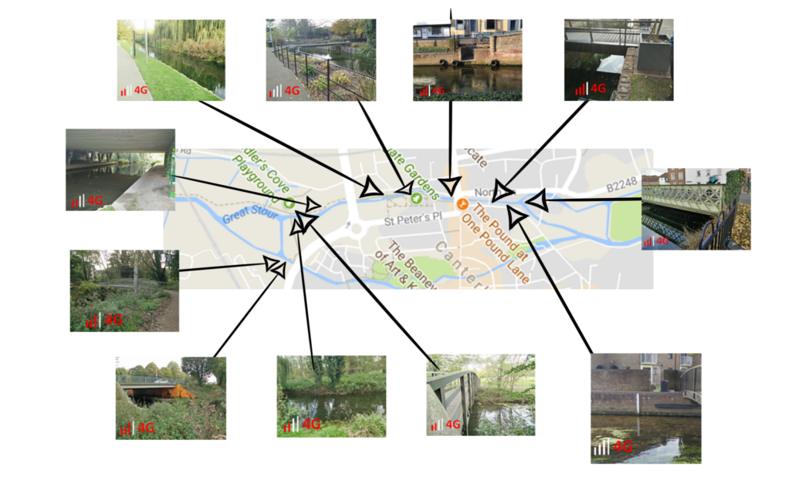
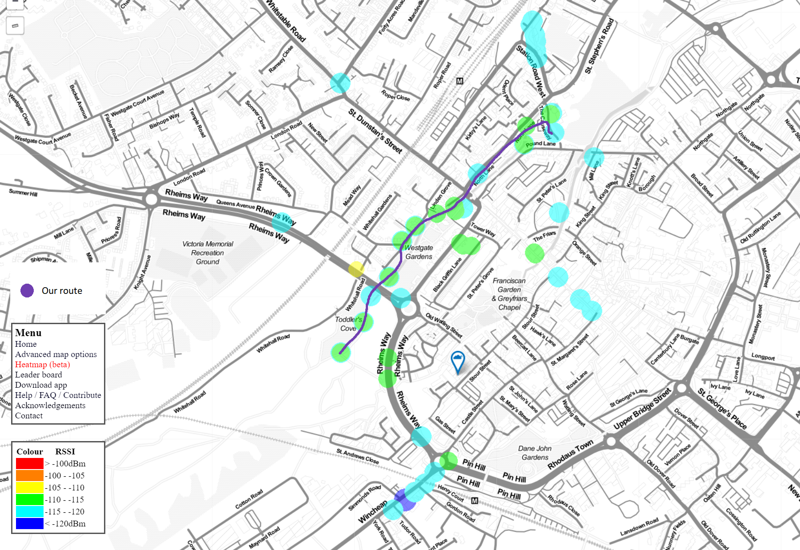
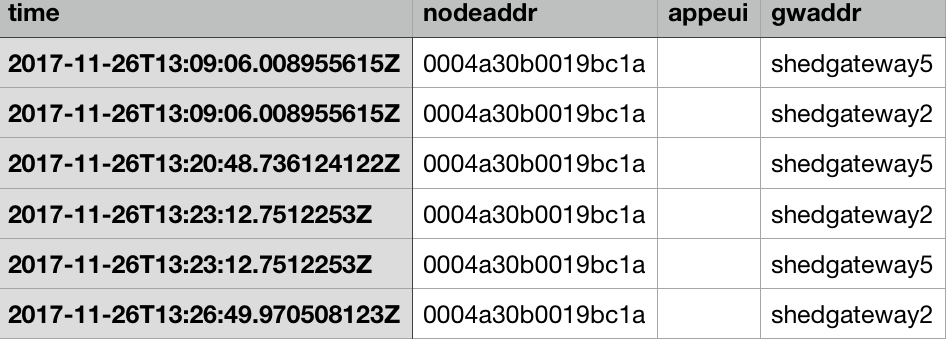

This page will display our testing of 2G, 3G, 4G signals and The Things Network gateway coverages around Canterbury river areas.
We looked at a map provided by OpenSignal showing 2G, 3G and 4G network signal strengths in the Canterbury area. We immediately saw that the majority of the town falls under the "weak signal" spectrum.
To further confirm that these networks could cause issues when sending data, we went out to various areas alongside the river and took screenshots of the signal strength found at each location:
We were able to confirm that despite some places having two to three signal bars, some webpages would not load confirming OpenSignal's findings.
After ruling out 2G, 3G, 4G and WiFi, we came across The Things Network. Since the university had set up some gateways on campus spreading into town, we went to the river once again to map out which spots had the best signal strength from the gateway using TTN Mapper:
We found that we could successfully send packets of data using this network along various locations alongside the river:
